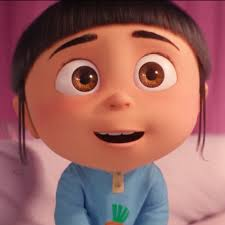
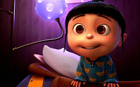
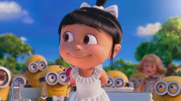
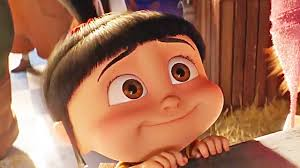
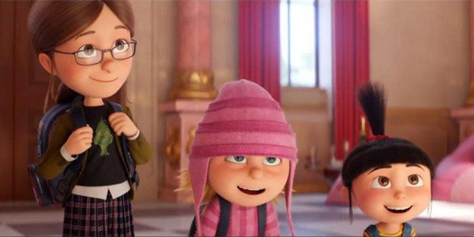

Agnes-The Kiddo
About Agnes
A super cute girl from Despicable who loves unicorn. Her small head with large eyes makes her even more cute.
Agnes's characteristics
she's super cute
she screams very loudly
She has one unicorn stuff toy
  
This is Agnes staring at you.
Agnes's sister
Margo
The eldest sister and the most mature sister
Edith
the mischievous sister

Here is Agnes with her sisters